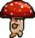
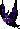
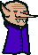
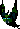
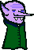
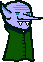
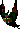

Bestiary
All 18 enemy types, with the AI that drives each one. Portraits are rendered through the game's own recolour shader, so a variant looks here exactly as it does in play.
The roster
Ordered by the wave they start appearing on. Weight is how often a type is drawn once it has unlocked, relative to everything else eligible — the behaviour enemies are deliberately rare, because a wave that is half Ravagers is not six times as interesting as a wave with one in it.


Bomber
BomberThe clock in a wave. It forces you to deal with it now rather than later, which is the only thing on the field that does.
The original art. PaleRevenant, Ravager are recolours of it.
Shares the skeleton sheet with the Ravager and the Revenant, which is why all three read as bone rather than flesh.
Toadstool
MeleeHalf a Mushroom's health at nearly double the speed. The enemy that punishes standing still.
A recolour of Mushroom's art, told apart by a hue rotation.

EvilWizard
CasterCasts from range and has no melee swing, but it is not safe to stand on any more — Backlash punishes anything inside 100px, including a player who walked into a cast.
The original art. Archmage, Bonecaller, DreadSovereign, Witchdoctor are recolours of it.
Ravager
ChargerThe first enemy you beat by reading it rather than out-damaging it. Low health, so the lane is the whole threat — and the time it spends winded afterwards is the damage window the fight pays you back with.
A recolour of Bomber's art, told apart by a colour tint.
Its row's attackRange is dead data — ChargerEnemy replaces the melee update entirely and uses its own trigger range, so the row value looks authoritative and governs nothing.
Sporeling
SplitterHealth that becomes two Toadstools, which are faster than the thing that made them. Kill it with room around you, or inside an explosion big enough to catch what comes out.
A recolour of Mushroom's art, told apart by a hue rotation.

Wisp
RangedA Bat that keeps up with you, and outranges it. It glows because the bat sprite is near-black, and a hue rotation preserves luma — recolouring alone was invisible on it.
A recolour of Bat's art, told apart by a hue rotation.
Brute
MeleeThe opposite trade: slow enough to kite forever, and the first enemy an un-upgraded orb genuinely cannot one-shot.
A recolour of Mushroom's art, told apart by a hue rotation.

Bulwark
ShieldThe card check. An orb that only goes forwards bounces off it all day; anything that flanks, pierces, arcs or simply arrives fast walks through. Its health is a long time to spend doing the wrong thing.
A recolour of Vampire's art, told apart by a hue rotation.

Nosferatu
VampireMore than twice a Vampire's health and faster. It roots for the same time, so the danger is purely how long it survives to keep doing it.
A recolour of Vampire's art, told apart by a hue rotation.
Witchdoctor
SupportHeals the most wounded allies around it often enough to outpace chip damage across a crowd. Capped at two alive at once, because three means nothing dies.
A recolour of EvilWizard's art, told apart by a hue rotation.
Archmage
CasterThe late-game priority target. Longer range, far more health, every cast another root somewhere on the map, and the hardest Backlash in the game.
A recolour of EvilWizard's art, told apart by a hue rotation.

Hivemind
RangedA Bat that fires three bolts in a narrow fan. Individually weak, but it punishes the straight-line retreat that answers every other ranged enemy.
A recolour of Bat's art, told apart by a hue rotation.
Bonecaller
SupportCalls fresh bodies out of the ground on a timer. Ignore it and the wave stops emptying. Violet and badged so it is not mistaken for the healer at range — an earlier olive hue made the two indistinguishable.
A recolour of EvilWizard's art, told apart by a hue rotation.
Bosses
Exempt from wave modifiers' health multipliers, and never elite. The fights in full →

A siege engine. It walks, and the fight is read from a distance.
A recolour of EvilWizard's art, told apart by a hue rotation.

The opposite fight, and the reason there are two.
A recolour of Bomber's art, told apart by a colour tint.
No ranged attack at all. Its speed is capped below the wizard's own, on purpose, even at phase three.
Behaviour classes
What actually drives each type. Several enemies share a class and differ only in their stat block — a Nosferatu is a Vampire with different numbers — and that is the cheap half of the roster. The rest have their own code.
takeDamage returns false, exactly as an iframe-swallowed hit does
— and bounces off harder than it arrived. Hit it from behind, or arrive fast enough to
punch straight through the guard.